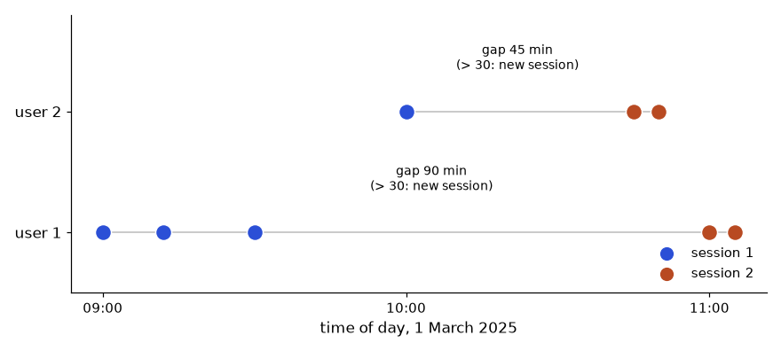
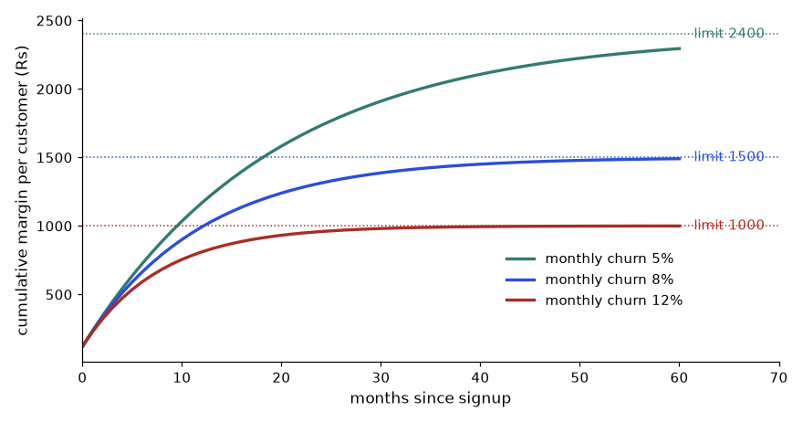

Open any analytics job post and you will see the same words: funnel, cohort, retention, churn, segmentation, LTV, CAC. These are not advanced statistics. They are careful ways of counting people and money, and once you can do them, you can answer most of the questions a business asks. In this chapter you will design KPIs that cannot be gamed, build a funnel and a cohort retention table in pandas, calculate churn, segment customers with RFM, and walk through short cases from product, marketing, sales, finance and operations. By the end you will be able to take an events or orders table and produce the five tables that a weekly business review is built from. We reuse the Indian online shop from Chapter 1. All code below was run, and the outputs are real. Where the data is simulated, we say so.
Words you need first
| Word | Plain meaning | Example |
|---|---|---|
| North-star metric | The one number that best shows the value customers get | Orders delivered per week |
| Output metric | A result you want but cannot directly push | Monthly revenue |
| Input metric | A thing you can push that moves the output | Number of product pages with reviews |
| Guardrail metric | A metric that must NOT get worse while you chase the goal | Return rate, complaint rate |
| SMART | Specific, Measurable, Achievable, Relevant, Time-bound | "Raise repeat purchase rate from 22% to 26% by 31 March" |
| ARPU | Average revenue per user = revenue / active users | Rs 150 per month |
| CAC | Customer acquisition cost = marketing spend / new customers | Rs 600 |
| LTV | Lifetime value: total profit one customer brings before leaving | Rs 1,200 |
| MRR / ARR | Monthly / annual recurring revenue (subscriptions) | ARR = MRR × 12 |
| NPS | Net Promoter Score = % promoters − % detractors | +30 |
How it works. Output metrics (revenue) tell you if you won. Input metrics (traffic, conversion, delivery speed) tell you what to do on Monday. Guardrails protect you from "winning" the wrong way: if you raise sales by 20% with huge discounts, the margin guardrail turns red.
Why it is called "north-star". Sailors steer by the north star because it does not move. A north-star metric should stay meaningful even as the product changes. "Page views" is a poor north star because you can raise it by making navigation worse. "Orders delivered" is better because it needs a happy customer.
Real-world mapping
| Item | Example value | Where it appears in the job |
|---|---|---|
| North star | Weekly delivered orders | Top of the company dashboard |
| Input metric | Search-to-cart rate | Product team's weekly goal |
| Guardrail | Return rate under 8% | Every A/B test (Chapter 13) |
| SMART goal | Cut delivery delay from 12% to 8% by March | Quarterly planning |
Worked problem 12.1.1 (unit economics, small numbers) The shop earns Rs 6,00,000 per month from 4,000 active customers. Its gross margin (share of revenue left after the cost of goods) is 40%. Monthly churn is 5%. It spent Rs 3,00,000 on marketing and gained 500 new customers. Find ARPU, expected lifetime, LTV, CAC, LTV/CAC and payback time.
Worked problem 12.1.2 (NPS) A survey of 100 customers asks "How likely are you to recommend us, 0 to 10?" Scores 9-10 are promoters, 7-8 passives, 0-6 detractors. Result: 50 promoters, 30 passives, 20 detractors. Find NPS.
The picture: a KPI tree
North star: weekly delivered orders (output)
├── New-customer orders <- input: ad clicks x conversion
├── Repeat orders <- input: repeat rate, email reach
└── Guardrails: return rate < 8%, delivery delay < 10%, margin > 35%Read it from the top. The north star is split like the metric tree of Section 1.4. Guardrails sit beside the tree and are checked every time.
Connection to the real job. When a stakeholder says "improve engagement", your first task is to ask "which metric, defined how, and which guardrail?" Chapter 14 shows how to write the definitions into the memo.
Applications
Check yourself
Formal definition. A funnel is an ordered list of steps a user should take (visit, view product, add to cart, pay). For each step, count the distinct users who reached it. Two rates matter:
step conversion = users at this step / users at the previous step
overall conversion = users at this step / users at the first stepRemember the performance-testing parallel: a funnel is like a transaction with several samplers. Where the failure rate jumps is where you look.
Real-world mapping
| Item | Example value | Where it appears in the job |
|---|---|---|
| Step | Add to cart | Event name in a tracking plan |
| Step conversion | 50% cart to paid | Product weekly review |
| Drop-off | 50% lost between cart and payment | Checkout redesign project |
Worked example 12.2.1 (predict, run, explain) An event table has one row per user per step reached. Six users, four steps. Before you run it: how many users reach "paid"? (Look at the data: only user 1 has a "paid" row.)
import pandas as pd
ev = pd.DataFrame({
"user":[1,1,1,1,2,2,2,3,3,4,5,5,6],
"step":["visit","product","cart","paid","visit","product","cart","visit","product","visit","visit","product","visit"]})
order=["visit","product","cart","paid"]
f = ev.groupby("step")["user"].nunique().reindex(order).to_frame("users")
f["step_conv_%"]=(f["users"]/f["users"].shift(1)*100).round(1)
f["overall_%"]=(f["users"]/f["users"].iloc[0]*100).round(1)
print(f)Real output:
users step_conv_% overall_%
step
visit 6 NaN 100.0
product 4 66.7 66.7
cart 2 50.0 33.3
paid 1 50.0 16.7Line by line: groupby("step")["user"].nunique() counts distinct users per step (nunique, not count, so a user who views two products is counted once). .reindex(order) forces the funnel order, because groupby would sort the names alphabetically (cart, paid, product, visit), which is wrong. .shift(1) moves the column down one row so each step is divided by the previous step. The first row has no previous step, hence NaN (not a number).
Answer Overall conversion is 1 of 6, or 16.7%. The biggest relative drop is visit to product (33.3% lost), but the cart-to-paid step loses half of those who were ready to buy. That is usually the more valuable one to fix because these users already wanted the product.
The typical wrong version. Using .count() instead of .nunique() counts rows. If user 1 viewed the cart page 3 times, the cart step would be inflated and step conversion could exceed 100%. Another wrong version: skipping .reindex(order), which gives rows in alphabetical order and a meaningless shift.
Worked problem 12.2.2 (hand calculation) Last week: 20,000 visits, 8,000 product views, 1,600 carts, 800 payments. Find each step conversion and overall conversion. Then find the effect of lifting cart-to-pay from 50% to 60%.
Funnel pitfalls. Define the window (must all steps happen in one session, or within 7 days?). Decide whether order matters (strict funnel: step 3 must come after step 2). Watch for users who skip steps (paid without a cart event usually means a tracking bug).
Applications
Check yourself
nunique, not count? Answer: We count people, not clicks.Words you need first
| Word | Plain meaning |
|---|---|
| Cohort | A group of users who started in the same period (signup month) |
| Offset | Months since the cohort started (0 = the start month) |
| Retention at offset k | Share of the cohort still active k months later |
| Churn | Share of customers lost in a period. For a given period, churn = lost / customers at the start |
| Active | You must define it: "placed an order in the month" or "opened the app" |
Formal definition.
retention(cohort, k) = active users of the cohort at offset k / cohort size
monthly churn = customers active last month and not active this month / customers active last monthRetention and churn are two sides of one coin only if "active" means the same thing in both.
Worked example 12.3.1 (predict, run, explain) The data below is simulated (a seeded random generator, 1,000 users signing up January to March 2025, with true retention set to 100%, 45%, 32%, 25% at offsets 0 to 3). It stands in for real data. Before you run it: will each cohort's offset-1 retention be exactly 45%? (No, random noise.)
import pandas as pd, numpy as np
rng=np.random.default_rng(42)
n=1000
signup=pd.to_datetime("2025-01-01")+pd.to_timedelta(rng.integers(0,90,n),unit="D")
users=pd.DataFrame({"user_id":range(n),"signup":signup})
users["cohort"]=users.signup.dt.to_period("M")
rows=[]
for u,s in zip(users.user_id,users.signup):
m0=s.to_period("M")
for k in range(0,4):
p=[1.0,0.45,0.32,0.25][k]
if rng.random()<p: rows.append((u,m0+k))
act=pd.DataFrame(rows,columns=["user_id","month"])
act=act.merge(users[["user_id","cohort"]],on="user_id")
act["offset"]=(act.month-act.cohort).apply(lambda x:x.n)
act=act[act.month<=pd.Period("2025-06")]
tab=act.pivot_table(index="cohort",columns="offset",values="user_id",aggfunc="nunique")
print(tab)
print((tab.div(tab[0],axis=0)*100).round(1))Real output:
offset 0 1 2 3
cohort
2025-01 342 165 99 93
2025-02 308 137 104 82
2025-03 350 165 112 91
offset 0 1 2 3
cohort
2025-01 100.0 48.2 28.9 27.2
2025-02 100.0 44.5 33.8 26.6
2025-03 100.0 47.1 32.0 26.0Line by line: a Period is pandas' "whole month" type, so m0+k means "k months after". offset is the month difference. pivot_table(... aggfunc="nunique") builds the cohort grid: rows are cohorts, columns are offsets, values are distinct active users. Dividing each row by its offset-0 value (tab.div(tab[0], axis=0)) turns counts into retention percentages.
The picture: how to read the triangle. Each row is one cohort. Each column is time since signup. Reading across a row shows one batch ageing. Reading down a column compares batches at the same age, which is the fair comparison. Here offset-1 retention is 48.2%, 44.5%, 47.1%: all near the true 45%, and the spread is noise from random sampling. In real data the bottom-right corner is empty, because later cohorts have not had time to reach later offsets.
Answer About 45 to 48% of users return the month after signup, and about 26 to 27% are still active at month 3. The drop is steepest in the first month (about 53% lost), then it flattens. This "steep then flat" shape is the typical retention curve. The flat part is your loyal core.
Worked problem 12.3.2 (churn by hand) In March two customers were active, E and G. In April only G was active. What is the April churn? And what if 400 customers were active in March and 340 of them returned in April?
Two kinds of retention. N-day or classic retention asks "active exactly on day 30". Rolling retention asks "active on day 30 or later". Rolling is always higher. Always say which one you use. For a subscription business, churn is cancellations. For a shop with no subscription, "churn" is a judgement call: a customer who has not ordered for, say, 90 days is called churned, and the 90 comes from the typical gap between orders.
Connection to the real job. Retention is the first chart a product or growth team asks for. In SQL you build the same grid with a self-join or window functions (your SQL document covers cohort tables). Chapter 13 uses retention as a guardrail in experiments.
Applications
Check yourself
Formal definition. RFM scores each customer on three things: Recency (days since last order, smaller is better), Frequency (number of orders), and Monetary (total spend). Each gets a score (here 1 to 3, with 3 best). Then rules map score combinations to named segments with an action.
Worked example 12.4.1 Eight customers, 15 orders, "today" is 2025-07-01. Thresholds (chosen by us, they depend on the business): Recency score 3 if 30 days or fewer, 2 if 31-90, 1 if over 90. Frequency 1 if one order, 2 if 2-3, 3 if 4 or more. Monetary 1 if under Rs 500, 2 if 500-1,999, 3 if Rs 2,000 or more. Before you run it: customer B spent Rs 5,500 and last ordered 11 days ago. What segment?
import pandas as pd
o = pd.DataFrame({
"cust":["A","A","A","B","B","C","D","D","D","D","E","F","G","G","H"],
"date":pd.to_datetime(["2025-06-25","2025-06-10","2025-05-02","2025-06-20","2025-01-10","2025-02-01",
"2025-06-28","2025-06-15","2025-06-01","2025-05-20","2025-03-05","2025-06-30","2025-04-01","2025-03-01","2025-01-05"]),
"amount":[1200,800,500,3000,2500,400,300,350,250,400,900,150,700,600,100]})
today=pd.Timestamp("2025-07-01")
rfm=o.groupby("cust").agg(last=("date","max"),F=("date","count"),M=("amount","sum"))
rfm["R"]=(today-rfm["last"]).dt.days
rfm["R_s"]=pd.cut(rfm.R,[-1,30,90,10**6],labels=[3,2,1]).astype(int)
rfm["F_s"]=pd.cut(rfm.F,[0,1,3,10**6],labels=[1,2,3]).astype(int)
rfm["M_s"]=pd.cut(rfm.M,[0,499,1999,10**9],labels=[1,2,3]).astype(int)
def seg(r):
if r.R_s==3 and r.F_s>=2: return "Champion"
if r.R_s==3: return "New"
if r.R_s==1 and r.M_s>=2: return "At risk"
if r.R_s==1: return "Lost"
return "Steady"
rfm["segment"]=rfm.apply(seg,axis=1)
print(rfm[["R","F","M","R_s","F_s","M_s","segment"]].to_string())
print(rfm.groupby("segment").agg(customers=("M","size"),revenue=("M","sum")).assign(share=lambda d:(d.revenue/d.revenue.sum()*100).round(1)))Real output:
R F M R_s F_s M_s segment
cust
A 6 3 2500 3 2 3 Champion
B 11 2 5500 3 2 3 Champion
C 150 1 400 1 1 1 Lost
D 3 4 1300 3 3 2 Champion
E 118 1 900 1 1 2 At risk
F 1 1 150 3 1 1 New
G 91 2 1300 1 2 2 At risk
H 177 1 100 1 1 1 Lost
customers revenue share
segment
At risk 2 2200 18.1
Champion 3 9300 76.5
Lost 2 500 4.1
New 1 150 1.2Line by line: agg(last=("date","max"), ...) is named aggregation: new column names on the left, (column, function) on the right. (today - last).dt.days is recency in days. pd.cut(values, bins, labels) puts numbers into ranges: bins [-1,30,90,10**6] mean (−1,30], (30,90], (90,1000000]; labels go from the smallest range up, so for recency the labels are [3,2,1] because a small number of days is good. .astype(int) turns the category labels into plain integers. Customer G has R = 91, just over the 90-day edge, so R_s = 1: edges matter, so choose thresholds from the business, not by taste.
Answer B is a Champion. Three Champions (A, B, D) are 3 of 8 customers but 76.5% of revenue. Two "At risk" customers (E, G) are worth Rs 2,200 and should get a win-back offer. Lost customers (C, H) hold only 4.1% of revenue, so do not spend much on them.
Real-world mapping
| Segment | Rule | Action |
|---|---|---|
| Champion | recent and frequent | Early access, loyalty points |
| At risk | not recent, decent spend | Win-back coupon, reminder |
| New | very recent, one order | Welcome series, second-purchase offer |
| Lost | not recent, low spend | Cheap email only |
Other segmentation. Behavioural (what they do: browse-heavy vs buy-fast), demographic (age, city), and clustering, where an algorithm such as k-means finds groups from numbers (Chapter on machine learning in the data-science document). Clustering suits many features, but its groups need names and actions or nobody uses them. Quartile-based RFM (pd.qcut) is common, but it produces unstable edges on small data with many ties, so we used fixed thresholds here. Clustering code was not run here.
Customer lifetime value (CLV) in pandas. Past CLV is simply the total spend per customer (the M column). Predicted CLV needs the formula of Section 12.1 or a model.
Connection to the real job. CRM and marketing teams use RFM tables every week for campaign lists. In an interview you may be asked to define RFM and write the SQL (NTILE(3) over each measure).
Applications
Check yourself
Each case below uses small numbers so you can check them by hand.
DAU is daily active users (distinct users active on a day), MAU is monthly active users. Stickiness is average DAU / MAU: roughly how often a typical monthly user comes back daily.
Worked example 12.5.1 Ten events over four days.
import pandas as pd
d=pd.DataFrame({"user":[1,2,3,1,2,1,4,1,2,3],"day":[1,1,1,2,2,3,3,4,4,4]})
dau=d.groupby("day").user.nunique(); print(dau.to_dict())
mau=d.user.nunique(); print("avg DAU",dau.mean(),"MAU",mau,"stickiness",round(dau.mean()/mau,3)){1: 3, 2: 2, 3: 2, 4: 3}
avg DAU 2.5 MAU 4 stickiness 0.625Worked example 12.5.2 (segmenting a drop) Platform DAU before and after a release:
import pandas as pd
w=pd.DataFrame({"platform":["android","android","ios","ios","web","web"],"period":["before","after"]*3,"dau":[50000,45000,30000,29000,20000,10000]})
p=w.pivot(index="platform",columns="period",values="dau")[["before","after"]]
p["chg"]=p.after-p.before; p["pct"]=(p.chg/p.before*100).round(1)
p["share_of_drop_%"]=(p.chg/p.chg.sum()*100).round(1)
print(p); print(p[["before","after"]].sum())period before after chg pct share_of_drop_%
platform
android 50000 45000 -5000 -10.0 31.2
ios 30000 29000 -1000 -3.3 6.2
web 20000 10000 -10000 -50.0 62.5
period
before 100000
after 84000
dtype: int64ROAS (return on ad spend) = revenue from ads / ad spend. A UTM is a tag added to a link (utm_source, utm_medium, utm_campaign) so the analytics tool knows where a visit came from. Attribution decides which touchpoint gets credit for a sale: last-click gives all credit to the final click, first-click to the first, and multi-touch splits it.
Worked problem 12.5.3 Campaign A: spend Rs 60,000, revenue Rs 1,80,000. Campaign B: spend Rs 40,000, revenue Rs 2,40,000. Which is better, and what is overall ROAS?
Sessions vs users: a session is one visit; one user can have many sessions. A report that says "10,000 sessions" and one that says "10,000 users" are different, so always say which.
Win rate = won / (won + lost). Open deals are not counted. A weighted pipeline is the sum of deal value × probability for its stage.
Worked problem 12.5.4 Twenty deals: 6 won, 9 lost, 5 open. Three open deals of Rs 10 lakh are at the "demo" stage (20% chance), two of Rs 20 lakh are at "proposal" (60%). Find win rate and weighted pipeline.
P&L (profit and loss statement) lists revenue minus costs equals profit. Variance is actual minus budget, split into favourable (helps profit) and unfavourable (hurts profit).
Worked problem 12.5.5 Budget: revenue Rs 500, cost Rs 300 (in lakh). Actual: revenue 460, cost 330. Find profit variance.
SLA compliance = tickets resolved within target time / total tickets. Days of cover = stock / average daily sales. Reorder point = daily demand × lead time + safety stock.
Worked problem 12.5.6 Support resolves 940 of 1,000 tickets within 24 hours; target is 95%. A product has 600 units, sells 40 per day, supplier lead time is 7 days, safety stock is 100.
| Domain | Key metrics | Formula |
|---|---|---|
| HR | Attrition rate | leavers / average headcount: 12 / ((200 + 220)/2) = 5.7% |
| E-commerce | AOV, cart abandonment | 1 − (orders / carts) |
| Healthcare | Readmission rate, length of stay | readmitted / discharged |
| Banking and risk | Default rate, NPA ratio | defaulted loans / total loans |
| Pricing | Revenue effect of a price change | (1 + price change) × (1 + volume change) − 1: +5% price and −3% volume gives 1.05 × 0.97 = 1.0185, so +1.85% revenue |
For the pricing row, always check profit too, not only revenue. Forecasting basics and scenario analysis (best, base, worst) were practised in Chapter 3 with Goal Seek and Scenario Manager.
Real job tip, tooling. Product teams use event-tracking tools (GA4, Mixpanel, Amplitude, Segment) that need a tracking plan: a sheet listing each event name (use one style such as order_completed), when it fires and its properties. Messy event names break every funnel. A semantic layer (dbt metrics, LookML, Cube) stores each metric's definition once, so "revenue" means the same in every dashboard. Good dashboard governance means certified datasets, a data dictionary, a refresh schedule and controlled access. For surveys (NPS, Likert 1-5 scales), report the response rate and avoid averaging unless you state it is an approximation. Tableau, Looker and Metabase are BI tools in the same family as Power BI (the Power BI chapters cover the shared ideas). Not run here: any tool-specific steps.
Applications
Check yourself
LAG, ROW_NUMBER and a running SUM, which you met in Section 6.7.The recipe never changes, so memorise it:
LAG(ts) OVER (PARTITION BY user_id ORDER BY ts). The first event of a user has no previous event, so the gap is NULL.SUM of the flag per user. The running total goes up by one at each session start and stays flat inside a session, so it is the session number.We use a nine-row event log. User 1 browses at 09:00, 09:12 and 09:30, disappears for 90 minutes, and comes back at 11:00. User 2 has a 45-minute pause. User 3 has a single click. SQLite has no timestamp subtraction, so we use julianday, which counts days; multiplying by 24 and 60 gives minutes.
import sqlite3, pandas as pd
con = sqlite3.connect(":memory:")
con.executescript("""
CREATE TABLE events(user_id INT, ts TEXT, page TEXT);
INSERT INTO events VALUES
(1,'2025-03-01 09:00:00','home'),(1,'2025-03-01 09:12:00','product'),(1,'2025-03-01 09:30:00','cart'),
(1,'2025-03-01 11:00:00','home'),(1,'2025-03-01 11:05:00','product'),
(2,'2025-03-01 10:00:00','home'),(2,'2025-03-01 10:45:00','home'),(2,'2025-03-01 10:50:00','cart'),
(3,'2025-03-02 08:00:00','home');
""")
sql = """
WITH g AS (
SELECT user_id, ts,
(julianday(ts) - julianday(LAG(ts) OVER (PARTITION BY user_id ORDER BY ts))) * 24 * 60 AS gap_min
FROM events),
f AS (
SELECT user_id, ts, gap_min,
CASE WHEN gap_min IS NULL OR gap_min > 30 THEN 1 ELSE 0 END AS new_session
FROM g)
SELECT user_id, ts, ROUND(gap_min, 0) AS gap_min, new_session,
SUM(new_session) OVER (PARTITION BY user_id ORDER BY ts) AS session_no
FROM f ORDER BY user_id, ts
"""
print(pd.read_sql(sql, con).to_string(index=False)) user_id ts gap_min new_session session_no
1 2025-03-01 09:00:00 NaN 1 1
1 2025-03-01 09:12:00 12.0 0 1
1 2025-03-01 09:30:00 18.0 0 1
1 2025-03-01 11:00:00 90.0 1 2
1 2025-03-01 11:05:00 5.0 0 2
2 2025-03-01 10:00:00 NaN 1 1
2 2025-03-01 10:45:00 45.0 1 2
2 2025-03-01 10:50:00 5.0 0 2
3 2025-03-02 08:00:00 NaN 1 1
How to read it: Each dot is one click. A grey line joins one user's clicks. Where the line is long (90 minutes for user 1, 45 minutes for user 2) the colour changes, because the gap is above 30 minutes. Short gaps (12, 18, 5 minutes) stay inside one session.
Problem 12.6.1 Using the table above, how many sessions are there in total, and how long is each session of user 1?
| Idea | Sessions are the highest session_no per user, summed over users. Length is last click minus first click inside a session. |
|---|---|
| Count | User 1 has session_no up to 2, user 2 up to 2, user 3 up to 1. Total = 2 + 2 + 1 = 5. |
| Length | User 1 session 1: 09:00 to 09:30 = 30 minutes. Session 2: 11:00 to 11:05 = 5 minutes. |
| Check | A single-click session (user 3) has length 0. That is a known weakness: time on page for the last click is unknown, so session length is always a lower bound. |
The same recipe in pandas is shorter, because groupby().diff() gives the gap and cumsum() is the running sum.
import sqlite3, pandas as pd
con = sqlite3.connect(":memory:")
con.executescript("""
CREATE TABLE events(user_id INT, ts TEXT, page TEXT);
INSERT INTO events VALUES
(1,'2025-03-01 09:00:00','home'),(1,'2025-03-01 09:12:00','product'),(1,'2025-03-01 09:30:00','cart'),
(1,'2025-03-01 11:00:00','home'),(1,'2025-03-01 11:05:00','product'),
(2,'2025-03-01 10:00:00','home'),(2,'2025-03-01 10:45:00','home'),(2,'2025-03-01 10:50:00','cart'),
(3,'2025-03-02 08:00:00','home');
""")
ev = pd.read_sql("SELECT * FROM events", con, parse_dates=["ts"]).sort_values(["user_id", "ts"])
ev["gap_min"] = ev.groupby("user_id")["ts"].diff().dt.total_seconds() / 60
ev["new_session"] = (ev["gap_min"].isna() | (ev["gap_min"] > 30)).astype(int)
ev["session_no"] = ev.groupby("user_id")["new_session"].cumsum()
summary = (ev.groupby(["user_id", "session_no"])
.agg(start=("ts", "min"), clicks=("ts", "size"), minutes=("ts", lambda s: (s.max() - s.min()).total_seconds() / 60))
.reset_index())
print(summary.to_string(index=False))
print("sessions with 30 min limit:", len(summary))
for limit in (10, 60):
flag = ev["gap_min"].isna() | (ev["gap_min"] > limit)
print("sessions with", limit, "min limit:", int(flag.sum())) user_id session_no start clicks minutes
1 1 2025-03-01 09:00:00 3 30.0
1 2 2025-03-01 11:00:00 2 5.0
2 1 2025-03-01 10:00:00 1 0.0
2 2 2025-03-01 10:45:00 2 5.0
3 1 2025-03-02 08:00:00 1 0.0
sessions with 30 min limit: 5
sessions with 10 min limit: 7
sessions with 60 min limit: 4The last three lines are the reason to code the limit as a parameter. With a 10 minute limit you get more, shorter sessions; with 60 minutes you merge some of them. Neither is "true". Pick one, write it in the metric definition, and keep it fixed, or trends will move for the wrong reason.
Problem 12.6.2 User 2 clicked at 10:00, 10:45 and 10:50. A colleague says the limit should be 60 minutes. How many sessions does user 2 have then, and what does the average session length become?
| Gaps | 10:00 to 10:45 = 45 minutes, 10:45 to 10:50 = 5 minutes. |
|---|---|
| Flags (limit 60) | First click: new session. 45 is not above 60, so no new session. 5 is not above 60, so no new session. Sessions = 1. |
| Length | 10:00 to 10:50 = 50 minutes in one session. With the 30 minute limit it was two sessions of 0 and 5 minutes, average 2.5. |
| Meaning | One definition change moved user 2's average session length from 2.5 to 50 minutes. Always report the limit next to the metric. |
PARTITION BY user_id. Without the partition, the first click of user 2 is compared with the last click of user 1, and sessions bleed across people. Without ORDER BY ts in the running sum, the session number is computed in arbitrary order. Wrong: SUM(new_session) OVER () (one total for the whole table). Right: SUM(new_session) OVER (PARTITION BY user_id ORDER BY ts).Now the daily version. The table activity has one row for each day a user was active (some days appear twice because a user can have two events in one day). Question: what is each user's longest streak of consecutive days?
Dates are not numbers you can compare for "consecutive", but there is a neat trick. Number the user's distinct active days 1, 2, 3, and so on. Inside a run of consecutive days, the day goes up by one and the row number goes up by one, so day minus row number stays constant. When a day is skipped, the date jumps by 2 or more but the row number goes up by 1, so the difference changes. Each constant value of the difference marks one island (a streak). The skipped days between islands are the gaps.
import sqlite3, pandas as pd
con = sqlite3.connect(":memory:")
con.executescript("""
CREATE TABLE activity(user_id INT, day TEXT);
INSERT INTO activity VALUES
(1,'2025-03-01'),(1,'2025-03-02'),(1,'2025-03-03'),(1,'2025-03-05'),(1,'2025-03-06'),(1,'2025-03-06'),
(2,'2025-03-02'),(2,'2025-03-04'),(2,'2025-03-05'),(2,'2025-03-06'),(2,'2025-03-07'),(2,'2025-03-08');
""")
sql = """WITH d AS (SELECT DISTINCT user_id, day FROM activity),
n AS (SELECT user_id, day,
ROW_NUMBER() OVER (PARTITION BY user_id ORDER BY day) AS rn FROM d),
k AS (SELECT user_id, day, rn, DATE(day, '-' || rn || ' day') AS grp FROM n)
SELECT * FROM k ORDER BY user_id, day"""
print(pd.read_sql(sql, con).to_string(index=False)) user_id day rn grp
1 2025-03-01 1 2025-02-28
1 2025-03-02 2 2025-02-28
1 2025-03-03 3 2025-02-28
1 2025-03-05 4 2025-03-01
1 2025-03-06 5 2025-03-01
2 2025-03-02 1 2025-03-01
2 2025-03-04 2 2025-03-02
2 2025-03-05 3 2025-03-02
2 2025-03-06 4 2025-03-02
2 2025-03-07 5 2025-03-02
2 2025-03-08 6 2025-03-02Look at user 1: March 1, 2 and 3 all give the group date 2025-02-28. March 5 and 6 give 2025-03-01. User 2's March 4 to 8 all give 2025-03-02. Now group by the user and that constant, and take the first day, last day and count of each island.
import sqlite3, pandas as pd
con = sqlite3.connect(":memory:")
con.executescript("""
CREATE TABLE activity(user_id INT, day TEXT);
INSERT INTO activity VALUES
(1,'2025-03-01'),(1,'2025-03-02'),(1,'2025-03-03'),(1,'2025-03-05'),(1,'2025-03-06'),(1,'2025-03-06'),
(2,'2025-03-02'),(2,'2025-03-04'),(2,'2025-03-05'),(2,'2025-03-06'),(2,'2025-03-07'),(2,'2025-03-08');
""")
sql = """WITH d AS (SELECT DISTINCT user_id, day FROM activity),
n AS (SELECT user_id, day,
ROW_NUMBER() OVER (PARTITION BY user_id ORDER BY day) AS rn FROM d),
k AS (SELECT user_id, day, rn, DATE(day, '-' || rn || ' day') AS grp FROM n)
SELECT user_id, MIN(day) AS start_day, MAX(day) AS end_day, COUNT(*) AS days
FROM k GROUP BY user_id, grp ORDER BY user_id, start_day"""
print(pd.read_sql(sql, con).to_string(index=False)) user_id start_day end_day days
1 2025-03-01 2025-03-03 3
1 2025-03-05 2025-03-06 2
2 2025-03-02 2025-03-02 1
2 2025-03-04 2025-03-08 5SELECT DISTINCT step. User 1 has March 6 twice. With ROW_NUMBER over the raw rows, the second March 6 gets row number 6 while the date does not move, so the difference changes and the streak 5, 6 is cut in two (and the real streak is reported as 1 day shorter). Always reduce to one row per user and day before numbering. Use DENSE_RANK instead if you cannot dedupe first.The pandas version subtracts the running count (as days) from the date. The same code also finds the gaps, by comparing each island's end with the next island's start.
import sqlite3, pandas as pd
con = sqlite3.connect(":memory:")
con.executescript("""
CREATE TABLE activity(user_id INT, day TEXT);
INSERT INTO activity VALUES
(1,'2025-03-01'),(1,'2025-03-02'),(1,'2025-03-03'),(1,'2025-03-05'),(1,'2025-03-06'),(1,'2025-03-06'),
(2,'2025-03-02'),(2,'2025-03-04'),(2,'2025-03-05'),(2,'2025-03-06'),(2,'2025-03-07'),(2,'2025-03-08');
""")
a = pd.read_sql("SELECT DISTINCT user_id, day FROM activity ORDER BY user_id, day", con)
a["day"] = pd.to_datetime(a["day"])
a["grp"] = a["day"] - pd.to_timedelta(a.groupby("user_id").cumcount() + 1, unit="D")
isl = (a.groupby(["user_id", "grp"])
.agg(start_day=("day", "min"), end_day=("day", "max"), days=("day", "size"))
.reset_index().drop(columns="grp"))
print(isl.to_string(index=False))
print("longest streak:", isl.groupby("user_id")["days"].max().to_dict())
isl["next_start"] = isl.groupby("user_id")["start_day"].shift(-1)
isl["gap_days"] = (isl["next_start"] - isl["end_day"]).dt.days - 1
print(isl.dropna(subset=["gap_days"])[["user_id", "end_day", "next_start", "gap_days"]].to_string(index=False)) user_id start_day end_day days
1 2025-03-01 2025-03-03 3
1 2025-03-05 2025-03-06 2
2 2025-03-02 2025-03-02 1
2 2025-03-04 2025-03-08 5
longest streak: {1: 3, 2: 5}
user_id end_day next_start gap_days
1 2025-03-03 2025-03-05 1.0
2 2025-03-02 2025-03-04 1.0Problem 12.6.3 Using the islands of user 2, what is the longest streak, and on 2025-03-08 what is the user's current streak if "today" is 2025-03-09 and a streak is still alive if the last active day is yesterday or today?
| Islands | User 2: 2025-03-02 (1 day) and 2025-03-04 to 2025-03-08 (5 days). |
|---|---|
| Longest | max(1, 5) = 5 days. |
| Current | The last island ends on 2025-03-08, which is yesterday relative to 2025-03-09, so the streak is alive and equals 5. |
| Rule | Current streak = days of the island whose end_day is today or yesterday, otherwise 0. If today were 2025-03-11, the streak would be 0 (broken). |
Problem 12.6.4 Orders have ids 101, 102, 103, 106, 107, 110. Find the missing ids with the island idea.
| Idea | For consecutive integers, id minus row number is constant inside a run. |
|---|---|
| Compute | Row numbers 1 to 6. id - rn = 100, 100, 100, 102, 102, 104. Three islands: 101 to 103, 106 to 107, 110. |
| Gaps | Between 103 and 106 the missing ids are 104 and 105. Between 107 and 110: 108 and 109. |
| Meaning | Four orders are missing from the sequence. This is a data quality check for lost records, not only a streak trick. |
ORDER BY.The data is small on purpose, so you can check every number by hand: 9 users in three signup cohorts (4 in January, 3 in February, 2 in March) and 19 rows saying "this user was active in this month". Month text like 2025-03 cannot be subtracted, so convert it to a month index, year * 12 + month, and subtract.
import sqlite3, pandas as pd
con = sqlite3.connect(":memory:")
con.executescript("""
CREATE TABLE users(user_id INT, signup_month TEXT);
INSERT INTO users VALUES (1,'2025-01'),(2,'2025-01'),(3,'2025-01'),(4,'2025-01'),
(5,'2025-02'),(6,'2025-02'),(7,'2025-02'),(8,'2025-03'),(9,'2025-03');
CREATE TABLE act(user_id INT, month TEXT);
INSERT INTO act VALUES
(1,'2025-01'),(1,'2025-02'),(1,'2025-03'),(1,'2025-04'),
(2,'2025-01'),(2,'2025-02'),(2,'2025-04'),
(3,'2025-01'),(3,'2025-02'),
(4,'2025-01'),
(5,'2025-02'),(5,'2025-03'),(5,'2025-04'),
(6,'2025-02'),(6,'2025-03'),
(7,'2025-02'),
(8,'2025-03'),(8,'2025-04'),
(9,'2025-03');
""")
sql = """
WITH a AS (
SELECT u.signup_month AS cohort,
(CAST(substr(x.month,1,4) AS INT)*12 + CAST(substr(x.month,6,2) AS INT))
-(CAST(substr(u.signup_month,1,4) AS INT)*12 + CAST(substr(u.signup_month,6,2) AS INT)) AS k,
x.user_id
FROM act x JOIN users u USING(user_id)),
c AS (SELECT signup_month AS cohort, COUNT(*) AS size FROM users GROUP BY signup_month)
SELECT a.cohort, a.k, COUNT(DISTINCT a.user_id) AS active, c.size,
ROUND(100.0*COUNT(DISTINCT a.user_id)/c.size, 1) AS pct
FROM a JOIN c USING(cohort) GROUP BY a.cohort, a.k ORDER BY a.cohort, a.k
"""
r = pd.read_sql(sql, con)
print(r.to_string(index=False))
print(r.pivot(index="cohort", columns="k", values="pct").to_string()) cohort k active size pct
2025-01 0 4 4 100.0
2025-01 1 3 4 75.0
2025-01 2 1 4 25.0
2025-01 3 2 4 50.0
2025-02 0 3 3 100.0
2025-02 1 2 3 66.7
2025-02 2 1 3 33.3
2025-03 0 2 2 100.0
2025-03 1 1 2 50.0
k 0 1 2 3
cohort
2025-01 100.0 75.0 25.0 50.0
2025-02 100.0 66.7 33.3 NaN
2025-03 100.0 50.0 NaN NaNProblem 12.7.1 Read the January cohort row by hand from the 19 activity rows and compare with the SQL.
| Cohort size | Users 1, 2, 3, 4 signed up in January: size 4. |
|---|---|
| k = 0 | All four were active in January: 4 / 4 = 100%. |
| k = 1 (February) | Users 1, 2, 3 were active in February (user 4 was not): 3 / 4 = 75%. |
| k = 2 (March) | Only user 1: 1 / 4 = 25%. User 2 skipped March. |
| k = 3 (April) | Users 1 and 2: 2 / 4 = 50%. User 2 came back. |
| Meaning | Retention does not always fall. A user can return after a gap (a "resurrected" user), which is why the k = 3 value is above k = 2. Matches the SQL output. |
COUNT(*) instead of COUNT(DISTINCT user_id) when the activity table has many rows per user and month (every order, every click). One active customer with 5 orders in a month is then counted as 5 retained customers and retention can exceed 100%. Count distinct users, and also divide by the cohort size from the users table, not by the k = 0 row of the activity table (users who signed up but did nothing would be lost).import sqlite3, pandas as pd
con = sqlite3.connect(":memory:")
con.executescript("""
CREATE TABLE users(user_id INT, signup_month TEXT);
INSERT INTO users VALUES (1,'2025-01'),(2,'2025-01'),(3,'2025-01'),(4,'2025-01'),
(5,'2025-02'),(6,'2025-02'),(7,'2025-02'),(8,'2025-03'),(9,'2025-03');
CREATE TABLE act(user_id INT, month TEXT);
INSERT INTO act VALUES
(1,'2025-01'),(1,'2025-02'),(1,'2025-03'),(1,'2025-04'),
(2,'2025-01'),(2,'2025-02'),(2,'2025-04'),
(3,'2025-01'),(3,'2025-02'),
(4,'2025-01'),
(5,'2025-02'),(5,'2025-03'),(5,'2025-04'),
(6,'2025-02'),(6,'2025-03'),
(7,'2025-02'),
(8,'2025-03'),(8,'2025-04'),
(9,'2025-03');
""")
u = pd.read_sql("SELECT * FROM users", con)
a = pd.read_sql("SELECT * FROM act", con)
m = a.merge(u, on="user_id")
for c in ("month", "signup_month"):
m[c] = pd.PeriodIndex(m[c], freq="M")
m["k"] = (m["month"] - m["signup_month"]).apply(lambda d: d.n)
active = m.groupby(["signup_month", "k"])["user_id"].nunique().unstack()
size = u.groupby("signup_month").size()
size.index = pd.PeriodIndex(size.index, freq="M")
print((active.div(size, axis=0) * 100).round(1))k 0 1 2 3
signup_month
2025-01 100.0 75.0 25.0 50.0
2025-02 100.0 66.7 33.3 NaN
2025-03 100.0 50.0 NaN NaNThe numbers equal the SQL pivot. In Excel, put the activity rows in a table with columns user_id, signup_month, month. Add a column k with =DATEDIF(signup_month, month, "m") (real dates in the first of each month) and use a PivotTable: rows = signup_month, columns = k, values = Distinct Count of user_id (tick "Add this data to the Data Model" to get Distinct Count). Divide each cell by the k = 0 cell with Show Values As, % of Parent Row Total or by a lookup of the cohort size. Because k = 0 is everybody in the cohort, the k = 0 column is the denominator.
A funnel counts how many users reached each step. Using the events log from Section 12.6, take each user's first time at each page with a conditional MIN, then count users per step. The strict version only counts a step if it happened after the previous one.
import sqlite3, pandas as pd
con = sqlite3.connect(":memory:")
con.executescript("""
CREATE TABLE events(user_id INT, ts TEXT, page TEXT);
INSERT INTO events VALUES
(1,'2025-03-01 09:00:00','home'),(1,'2025-03-01 09:12:00','product'),(1,'2025-03-01 09:30:00','cart'),
(1,'2025-03-01 11:00:00','home'),(1,'2025-03-01 11:05:00','product'),
(2,'2025-03-01 10:00:00','home'),(2,'2025-03-01 10:45:00','home'),(2,'2025-03-01 10:50:00','cart'),
(3,'2025-03-02 08:00:00','home');
""")
sql = """
WITH f AS (
SELECT user_id,
MIN(CASE WHEN page = 'home' THEN ts END) AS t_home,
MIN(CASE WHEN page = 'product' THEN ts END) AS t_product,
MIN(CASE WHEN page = 'cart' THEN ts END) AS t_cart
FROM events GROUP BY user_id)
SELECT COUNT(t_home) AS home,
COUNT(t_product) AS product,
SUM(t_cart IS NOT NULL) AS cart_any_order,
SUM(t_product IS NOT NULL AND t_cart > t_product) AS cart_strict
FROM f
"""
print(pd.read_sql(sql, con).to_string(index=False)) home product cart_any_order cart_strict
3 1 2 1Three users reached home. Only user 1 viewed a product (so product = 1). Users 1 and 2 both touched the cart, but user 2 went to the cart without viewing a product (a bookmarked link, or a bug), so the loose count is 2 and the strict count is 1. The difference of one user is the signal: either the funnel has a side door, or the tracking is broken. Decide which definition you report, and say so.
LTV answers: how much margin will an average new customer bring in over their life with us? With a constant monthly churn c (the share who leave each month), expected lifetime is 1 / c months. If a customer pays an average revenue per user (ARPU) every month and your margin is m, then
The reason: the first-month margin is ARPU × m, the next month's is ARPU × m × (1 − c), then × (1 − c)², and so on. The geometric series 1 + (1 − c) + (1 − c)² + ... adds up to 1 / c.
arpu, margin = 400, 0.30 # Rs per month, 30 percent margin
for churn in (0.05, 0.08, 0.10, 0.12):
print("churn", churn, "LTV", round(arpu * margin / churn))
# check the formula against the long sum, and against only the first 12 months
churn = 0.08
full = sum(arpu * margin * (1 - churn) ** t for t in range(2000))
first12 = sum(arpu * margin * (1 - churn) ** t for t in range(12))
print("series:", round(full, 1), " first 12 months:", round(first12, 1))churn 0.05 LTV 2400
churn 0.08 LTV 1500
churn 0.1 LTV 1200
churn 0.12 LTV 1000
series: 1500.0 first 12 months: 948.5
How to read it: Each curve climbs fast, then flattens towards its dotted limit. A lower churn (green) climbs more slowly past month 20 but ends far higher: halving churn from 10% to 5% doubles LTV. At 8% churn, the first 12 months give only 948.5 of the 1,500, so a one-year view understates value.
Problem 12.7.2 ARPU is Rs 400 per month, margin 30%, churn 8%. Acquiring one customer costs Rs 1,200. Is the channel worth it? What if churn is 12%?
| LTV at 8% | 400 × 0.30 / 0.08 = 120 / 0.08 = 1,500. |
|---|---|
| Ratio | LTV / CAC = 1,500 / 1,200 = 1.25. Profitable, but a 1.25 ratio is thin (many teams want 3). |
| LTV at 12% | 120 / 0.12 = 1,000, ratio 1,000 / 1,200 = 0.83, so each customer loses Rs 200. |
| Meaning | A rise of 4 points in churn turns a profitable channel into a loss. Retention work (Section 12.3) is worth as much as cheaper acquisition. |
| Pattern | Formula or code |
|---|---|
| Step conversion | users / users.shift(1) |
| Overall conversion | users / users.iloc[0] |
| Cohort grid | pivot_table(index="cohort", columns="offset", values="user_id", aggfunc="nunique") |
| Churn | lost / active last period |
| LTV | ARPU × margin × (1 / churn) |
| CAC, payback | spend / new customers, CAC / (ARPU × margin) |
| ROAS, win rate | revenue / spend, won / (won + lost) |
| Stickiness | avg DAU / MAU |
| NPS | %promoters − %detractors |
Problem 1 (easy). Funnel: 5,000 visits, 2,000 add to cart, 500 paid. Overall and step conversions? Answer: Visit to cart 40%, cart to paid 25%, overall 500 / 5000 = 10%.
Problem 2 (easy). NPS from 60 promoters, 25 passives, 15 detractors. Answer: 60% − 15% = +45.
Problem 3 (easy). Monthly churn is 8%. Expected lifetime and share left after 2 months? Answer: 1 / 0.08 = 12.5 months. 0.92² = 0.8464, about 84.6%.
Problem 4 (medium). ARPU Rs 200, margin 50%, churn 4%, CAC Rs 1,500. LTV, LTV/CAC, payback? Answer: LTV = 200 × 0.5 × 25 = 2,500. Ratio = 2,500 / 1,500 = 1.67. Payback = 1500 / 100 = 15 months.
Problem 5 (medium). What is the output? pd.Series([4,2]).shift(1) Answer: NaN, 4.0. The first position has no previous value. This is why the first funnel step has NaN conversion.
Problem 6 (find the bug). A funnel uses ev.groupby("step")["user"].count() and reports cart-to-pay of 120%. What is wrong? Answer: count counts events (rows), not people. A user who fires the "paid" event twice (a page refresh, a retry) is counted twice, so paid can exceed carts. Use nunique for distinct users, reindex to funnel order, and check each step is at most the previous step.
Problem 7 (medium). Customer: last order 45 days ago, 3 orders, total Rs 2,400. Scores with our thresholds and segment? Answer: R_s = 2, F_s = 2, M_s = 3. By our rules it is not Champion (R_s not 3), not New, and not At risk (R_s not 1), so "Steady". A good analyst would flag this edge case and add a rule.
Problem 8 (hard, scenario). Revenue is Rs 12 lakh, down from Rs 15 lakh. Orders fell from 3,000 to 2,500. How much of the fall is volume and how much is AOV? Answer: AOV₀ = 500, AOV₁ = 480. Volume effect = (2500 − 3000) × 500 = −2,50,000. AOV effect = 2500 × (480 − 500) = −50,000. Total −3,00,000. Mostly volume.
Problem 9 (interview). "Our new cohort has retention of 30% at month 1 but last year's had 40%. Is it worse?" Answer: Ask: same definition of active? Same acquisition channel mix (paid ads often bring weaker users)? Enough users for noise to be small? Compare at the same offset, split by channel, then decide. A mix shift can create a drop with no real decline in any channel (Simpson's paradox, Chapter 13).
Problem 10 (interview). "Which KPIs would you track for a food-delivery app, and what guardrails?" Answer: North star: completed orders per week. Inputs: restaurant availability, search-to-order conversion, delivery time. Output: revenue, repeat rate. Guardrails: cancellation rate, late-delivery rate, refund rate, rider earnings per hour.
Problem 11 (medium). Budget profit Rs 80, actual Rs 95. Revenue was +20 above budget. What happened to cost? Answer: Profit variance = +15, revenue variance = +20, so cost variance is +5 (costs were Rs 5 higher than budget, which is unfavourable), 20 − 5 = 15.
Problem 12 Write the SQL (or pandas) to find each user's number of sessions per day with a 30 minute limit, using the events table of Section 12.6. Which user has the most sessions on 2025-03-01?
Answer: Run the sessionization query and then SELECT user_id, COUNT(DISTINCT session_no) grouped by user and DATE(ts). User 1 and user 2 both have 2 sessions on 2025-03-01 (user 3 has none that day). A tie, so report both.
Problem 13 A user was active on 1, 2, 3, 7, 8, 9, 10 March. List the islands, the longest streak and the gap.
Answer: Day minus row number: 1-1=0, 2-2=0, 3-3=0, 7-4=3, 8-5=3, 9-6=3, 10-7=3. Islands: 1 to 3 (3 days) and 7 to 10 (4 days). Longest = 4. Gap: 4, 5, 6 March are missing, 3 days.
Problem 14 Find the bug: the retention table shows 112% for a cohort at k = 1.
Answer: Almost surely COUNT(*) over an activity table with several rows per user and month. Use COUNT(DISTINCT user_id). Another cause is a cohort size taken from a table that excludes some users.
Problem 15 Churn is 5% a month, ARPU Rs 250, margin 40%. LTV, and LTV after 12 months only?
Answer: LTV = 250 × 0.4 / 0.05 = 100 / 0.05 = 2,000. First 12 months: 100 × (1 − 0.95¹²) / 0.05 = 2,000 × (1 − 0.5404) = 919.2 (0.95¹² = 0.5404).
Problem 16 Interview: "How would you define an active user?" Give a careful answer.
Answer: Say what action counts (a purchase, a login, a key action rather than just opening the app), over what window (daily, weekly, 28 days), and for which users (excluding employees and bots). Show that the count changes if the definition changes, and write the definition next to every chart.
You are my patient, practical professor. I am a working professional in India moving into data roles, and English is my second language. Teach me Chapter 12 topic: KPI design, including north-star, input, output and guardrail metrics, plus LTV, CAC, ARPU and payback. Use an online shop with small numbers. Explain step by step, then ask me one calculation question at a time and wait for my answer. Check each of my numbers and explain mistakes in simple words.
You are my patient, practical professor. I am a working professional in India learning data analytics. Give me 8 graded exercises, easy to hard, on funnel analysis and cohort retention tables in pandas: groupby with nunique, shift, pivot_table, and reading a retention triangle. Include small data I can type in. Do not give solutions yet. When I paste my answers and code, review them line by line and correct my reasoning.
You are my patient, practical professor. I am a working professional moving into data roles. Explain RFM segmentation from scratch: recency, frequency, monetary, thresholds, segment names and the action for each. Then give me a table of 10 customers and ask me to score and segment them by hand. After I answer, compare with the correct result and explain any difference. Finally explain when k-means clustering is better than RFM rules.
You are my patient, practical professor. I am a working professional moving into data roles. Review my analysis of retention and churn for a business: [PASTE HERE]. Check that my definition of active is clear, cohorts are compared at the same age, incomplete cohorts are handled, and churn and retention numbers agree. List every problem, rank them by importance, and show how to fix the top two.
You are my patient, practical professor. I am a working professional preparing for data analyst interviews. Run a mock interview on business analytics: KPIs, funnels, cohorts, churn, RFM, ROAS, win rate and variance analysis. Ask six questions one at a time, with realistic numbers. After each answer, score me 1 to 5, give a model answer in simple English, and name one concept I should revise.